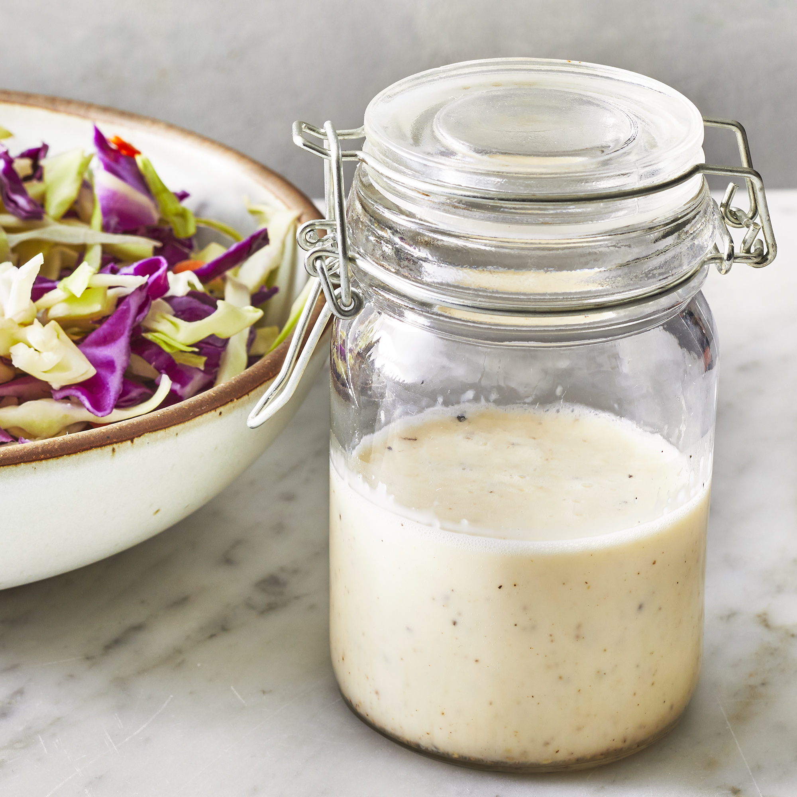

coleslaw dressing

Description
With minimal ingredients and prep work, this top-rated coleslaw dressing is your new summer potluck secret — but don't take it from us,
take it from over 1,500 reviewers who gave it a five-star rating. You can shred your own cabbage and carrots or transform store-bought
coleslaw mix into a refreshing and creamy side dish with this dressing.
Ingredients
- 1/2 cup mayonnaise
- 2 tablespoons white sugar
- 3/2 tablespoons lemon juice
- 1 tablespoon vinegar
- 1/2 teaspoon ground black pepper
- 1/4 teaspoon salt
Steps
- Whisk mayonnaise, sugar, lemon juice, vinegar, pepper, and salt together in a bowl until smooth and creamy.